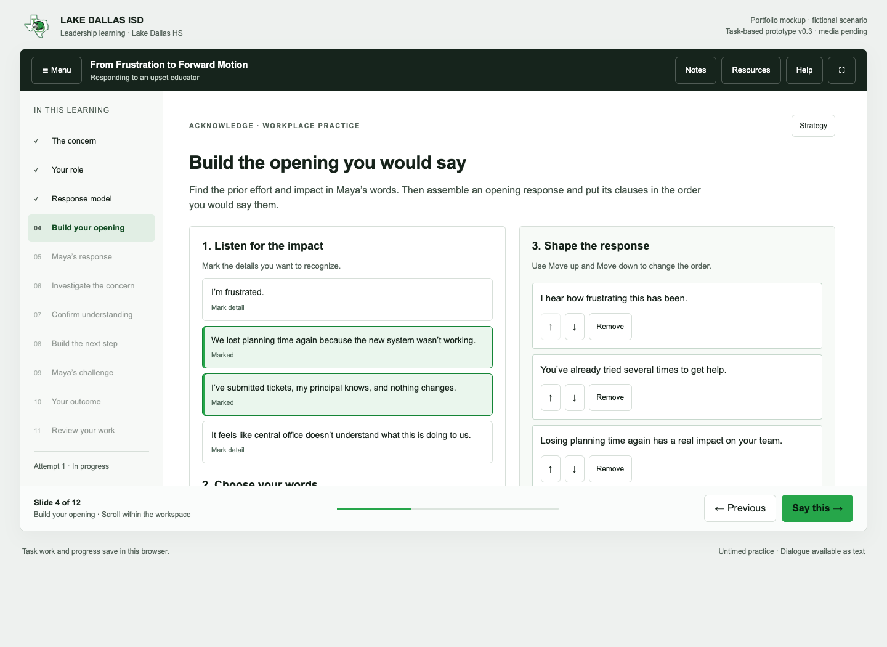
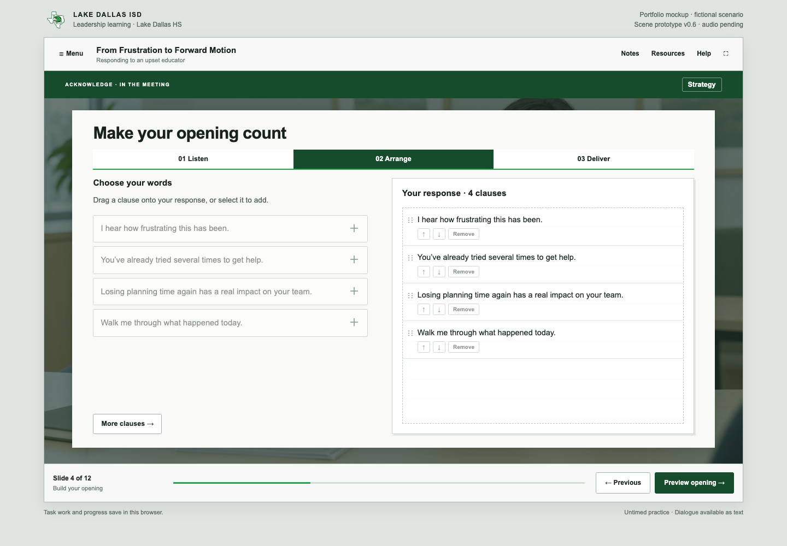
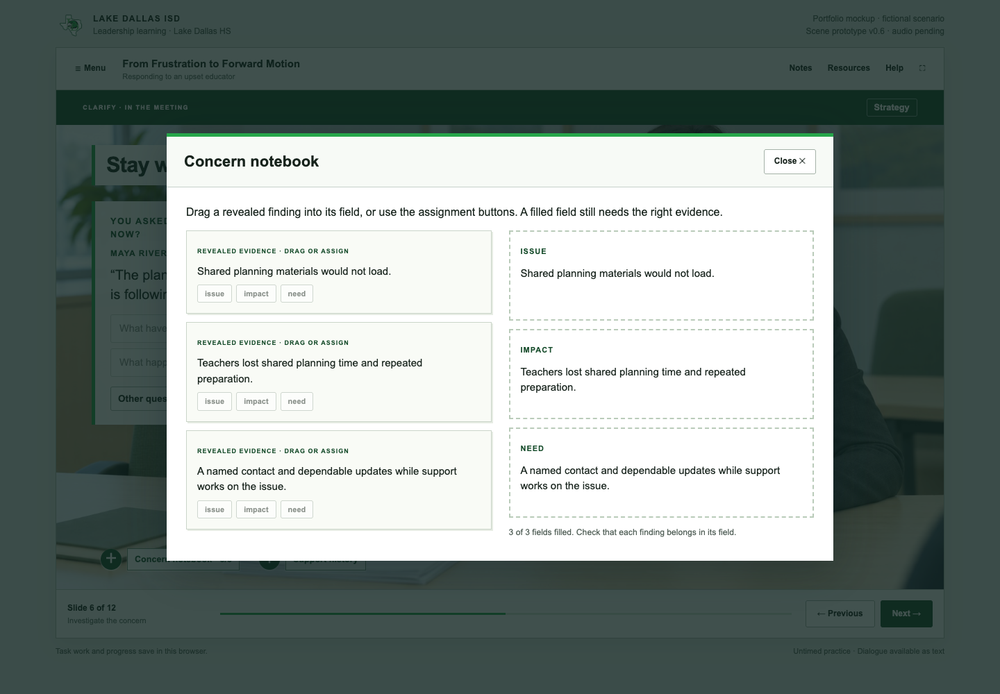
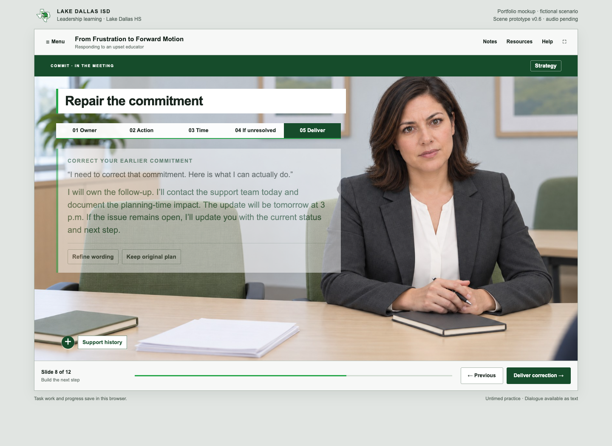
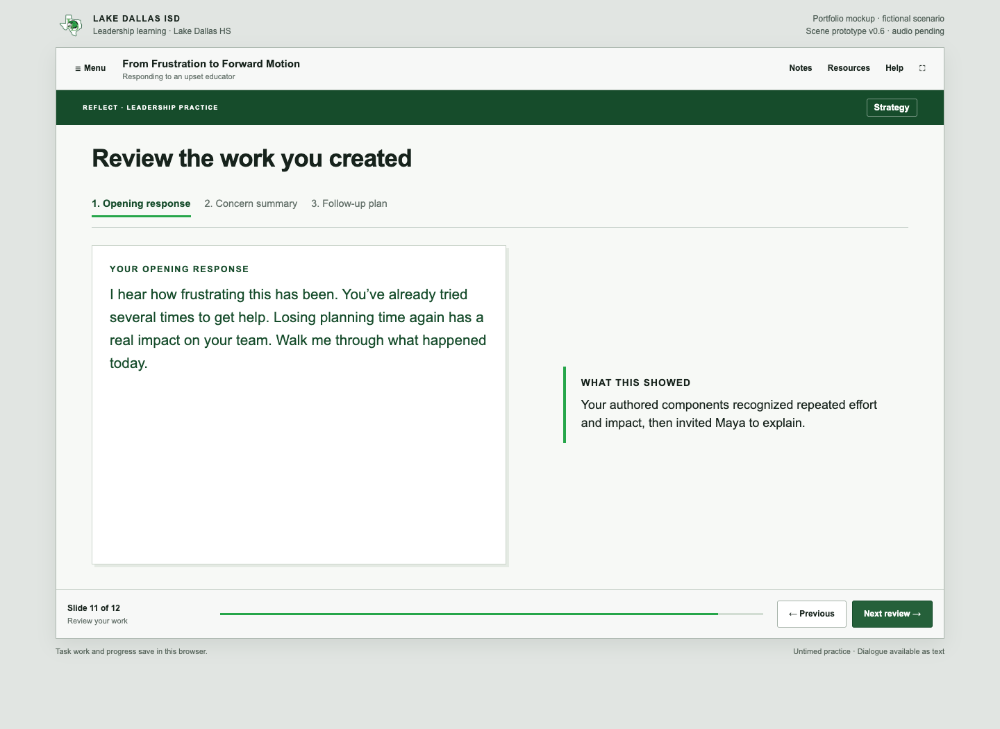
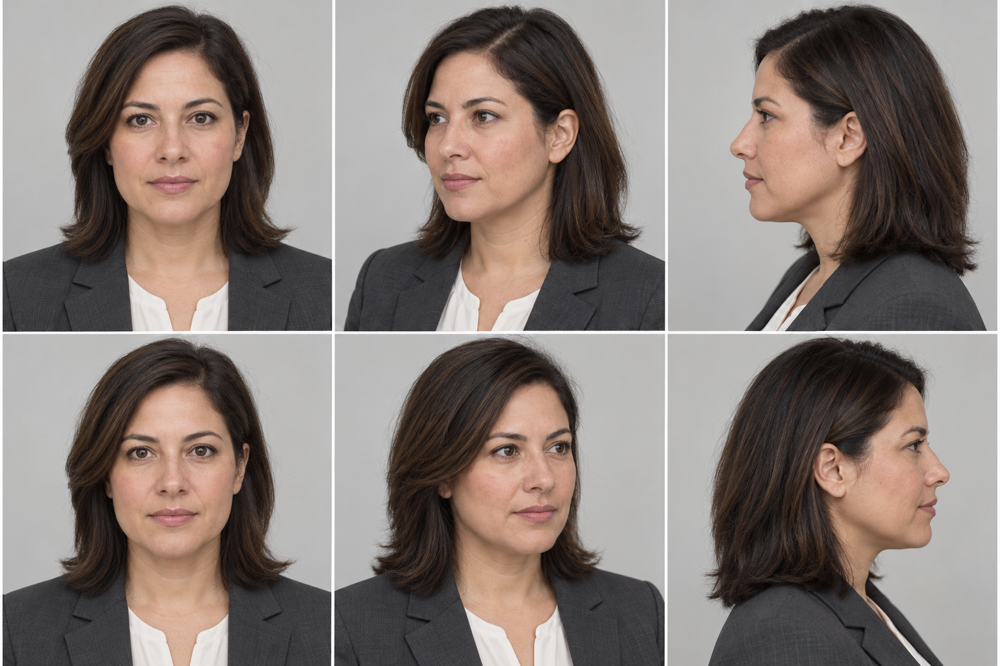

Play the course on this page
01 · Development case study
The design challenge
A frustrated educator walks into a meeting after repeated failures in an instructional system. A leader can know the support process and still damage the conversation by explaining too soon, minimizing the lost planning time, or promising a fix they cannot control. I designed this experience to rehearse that moment: listen to the concern, establish what it has cost the team, and leave with a next step the leader can actually own.
This is a self-directed portfolio project for district and school leaders. Lake Dallas HS provides the mock workplace context. Maya Rivera and the incident are fictional; the project does not represent district commissioning, endorsement, or a documented staff complaint. The intended practice duration is approximately 15 minutes, subject to a learner pilot.
02 · Development case study
My role and the design brief
I led the scenario design, storyboard, interaction architecture, visual direction, dialogue scripting, audio integration, assessment rules, and quality checks. The deliverables include the playable course, editable source, a SCORM 1.2 package, and development artifacts that explain the choices behind the experience.
The performance objective is observable: given an emotionally charged educator concern, construct an opening that acknowledges the experience, clarify the issue and its impact, and commit to a dependable follow-up within the leader’s authority. Three moves organize the practice: Acknowledge, Clarify, Commit. A successful ending alone is insufficient; the learner must also complete the debrief.
03 · Development case study
Planning the experience before building slides
I began with the role boundary and the decision flow. The leader can contact support, document the planning-time impact, and own an update. They cannot guarantee a technical fix or suspend district requirements. These boundaries drive both the dialogue and the consequences, so the course does not reward an unrealistic promise simply because it sounds reassuring.
The storyboard organizes a twelve-slide sequence: enter the meeting; establish the role; explore the three moves; build the opening; hear Maya’s response; investigate; confirm understanding; build the next step; address a challenge; see the outcome; review the work; and plan transfer. The conversation reconverges at work-product checkpoints. This keeps the scenario manageable while preserving meaningful differences in the learner’s approach.
I specified the character, environment, expression states, slide treatments, and audio cues before integrating media. The brand sheet records the supplied district palette, typography, and logo references, including an unresolved gray-color discrepancy. The interface uses restrained green accents, clear typography, and a professional meeting environment.
04 · Development case study
Developing an authored slide experience
The first interaction revision improved the decisions, but its stacked workspaces still felt like a scrolling web lesson. I revised the presentation around an authored stage: a persistent player, distinct briefing and meeting layouts, learner-paced reveals, contextual objects, and overlays for supporting material.
The meeting scene keeps Maya across the table from the learner. The support-history and notebook objects open focused layers without moving the learner into a separate page. Briefing slides use more open presentation layouts; response and commitment slides become task workspaces; the debrief returns attention to the learner’s actual work. This variation gives each slide a purpose while keeping the navigation consistent.
05 · Development case study
Interaction 1 — construct an opening
The learner marks what matters in Maya’s concern, selects response clauses, and arranges them before delivering the opening. Recognizing repeated effort and lost planning time precedes an invitation to explain. Leading with justification or generic guidance produces a guarded response.
The interaction assesses the construction and sequence of a response rather than recognition of a correct sentence. Dragging has button alternatives. An optional edit field lets the learner use their own wording, followed by explicit self-review; the course does not claim to semantically grade unrestricted prose.
06 · Development case study
Interaction 2 — investigate and organize evidence
The learner asks follow-up questions and hears the corresponding response. Some questions become available only after relevant information has been revealed. A notebook layer asks the learner to organize discovered evidence as issue, impact, and need.
Only information surfaced in the conversation belongs in the notebook. Maya’s summary feedback identifies what is missing without automatically completing the learner’s evidence work. The learner can return to the inquiry and revise the summary before moving into a commitment. This makes diagnosis a task, rather than a decorative dialogue menu.
07 · Development case study
Interaction 3 — make and repair a commitment
The commitment builder requires an owner, an action, an update time, and a fallback if the issue remains unresolved. The learner reviews the assembled message before delivering it. Maya challenges unsupported guarantees, unnamed ownership, indefinite timing, silence while waiting, and actions that ignore the planning-time impact.
Repair is explicit: the learner retracts and replaces an unreliable commitment. The original and revised plans remain available in the debrief. This lets the course model recovery while still acknowledging the consequence of the initial promise.
08 · Development case study
Branching, variables, states, and feedback
The outcome rules use the learner’s opening, evidence summary, final commitment, and repair history. The three endings are Partnership Restored, Issue Stabilized, and Concern Escalates. A reliable repair can stabilize the issue; the technical problem can remain unresolved even when the partnership improves.
The architecture follows the planning vocabulary a Storyline developer would use. Slide layouts establish the base scene. Visited and selected states support reveals and construction tasks. Character states reflect the conversation. Layers present the transcript, strategy, notebook, and resources. Variables retain selections, evidence, commitment fields, and review progress. Conditional triggers control navigation and outcomes. These behaviors are implemented in the custom runtime; they are not screenshots of native Storyline variables or triggers.
The learner sees conversational consequences rather than numerical trust points. Outcome priorities prevent overlapping endings and keep an unsupported final promise from qualifying as stabilization. These are authored learning rules, not validated predictions of educator behavior.
09 · Development case study
Debrief and transfer
The debrief reviews the opening, concern summary, and follow-up plan the learner created. It connects the outcome to those work products and shows the original plan when a repair occurred. The learner must review all three parts; reaching an ending does not bypass reflection on the decisions.
A downloadable preparation sheet carries the work into a future conversation. An optional reflection asks for one action to practice and remains in the open session. Replay resets the current attempt while retaining previously earned completion. Concern Escalates invites another approach; escalation is not presented as inherently inappropriate in real workplace practice.
10 · Development case study
Voiceover and learner control
The course includes 31 scripted passages: 24 Maya responses and seven narrator cues. Separate voices distinguish the conversation from guidance. Every spoken passage is matched to its script and preserved as an editable production asset.
Play/Pause, Replay, Mute, and optional auto-play support learner control. Playback stops on slide changes and overlays, preventing competing speech. Text remains available for dialogue, and the experience is untimed. Final listening review for delivery, pronunciation, and pacing remains a production acceptance step.
11 · Development case study
Testing the rules and the delivery
The branching engine passed 3,456 synthetic configurations and 79,669 assertions, including repair, clause ordering, self-review, evidence gating, summary revision, restoration, and replay. These counts describe automated verification; they are not learner sample sizes or evidence of training effectiveness.
Prior browser walkthroughs exercised the three endings and representative interaction routes. Keyboard testing identified an overlay-focus defect that was corrected and rechecked. Audio sources passed decoding and transcript checks, and browser checks covered playback controls and transition behavior.
The SCORM 1.2 adapter passed 13 automated tests. A browser mock LMS verified initialization, successful debrief completion, save-and-exit, and resume after relaunch. The package reports completion, not a fabricated numerical score. LMS progress is kept separate from standalone browser progress. Actual LMS import, reporting, and cross-device resume still require a pilot.
12 · Development case study
What the project demonstrates
The delivered experience demonstrates scenario design, authored slide presentation, state-based interactions, conditional consequences, corrective feedback, work-product assessment, voiceover integration, and completion/resume packaging. The strongest development change was replacing simple answer selection with the construction, diagnosis, and repair tasks a leader needs to perform.
The project also shows why interaction logic and presentation need separate review. A richer assessment can still look like a scrolling lesson until the layouts, pacing, contextual objects, and layers are designed as one experience. Preserved before-and-after artifacts make that revision visible.
13 · Development case study
Implementation and evaluation boundaries
The course is a custom HTML/CSS/JavaScript implementation of Storyline-style mechanics, delivered as a browser course and SCORM 1.2 package. No native .story file was created. This case study describes the design and development decisions from an e-learning builder’s perspective without claiming native Articulate authoring proficiency.
No learner pilot or workplace impact study has been conducted. Next evaluation steps are an uninterrupted learner walkthrough, a target-LMS import, keyboard and screen-reader review, and observed completion time. A later pilot could examine opening-response patterns, ending distribution, learners’ explanation of their commitments, and transfer to a subsequent conversation. Those are proposed measures, not achieved results.
Development evidence
Actual development captures document the interaction revision. Select an image to enlarge it.











Review the development artifacts
The package includes the brief, storyboard, brand application, character specifications, branching map, design decisions, full case study, and verification evidence. These are development records, not learner-study results.
Download development artifactsRead the case study as MarkdownTechnical checks passed. Final listening review, an actual LMS pilot, and learner effectiveness evaluation remain open.